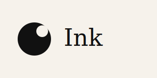

What is Ink?
Ink is a speed handwriting game where you race friends to write words fast and accurate. Your best times will help you climb the global leaderboard.
Key features
- Timed rounds
- Scoring
- Leaderboards
- Practice mode
- Realtime attempts
How it works
- Write a word on the canvas
- The model scores your accuracy and speed
- Results show up on the leaderboard